PHOTO / PRODUCTION STAFF
乃木坂46「桜橋を教えてくれた」 Music Video
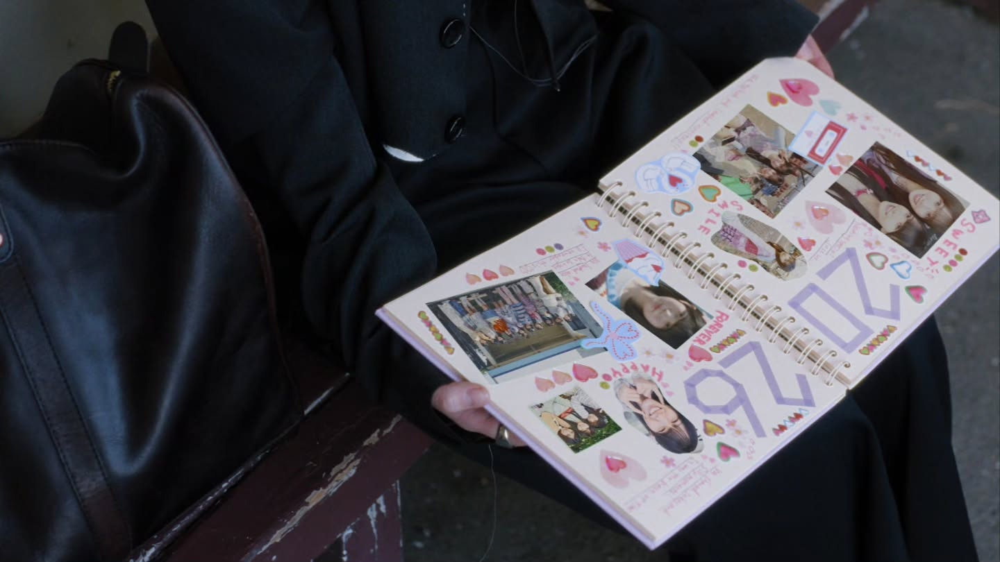
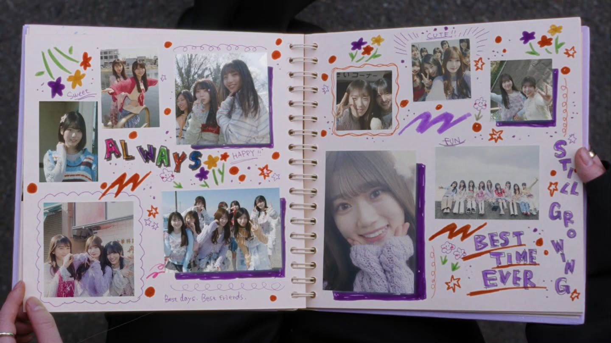
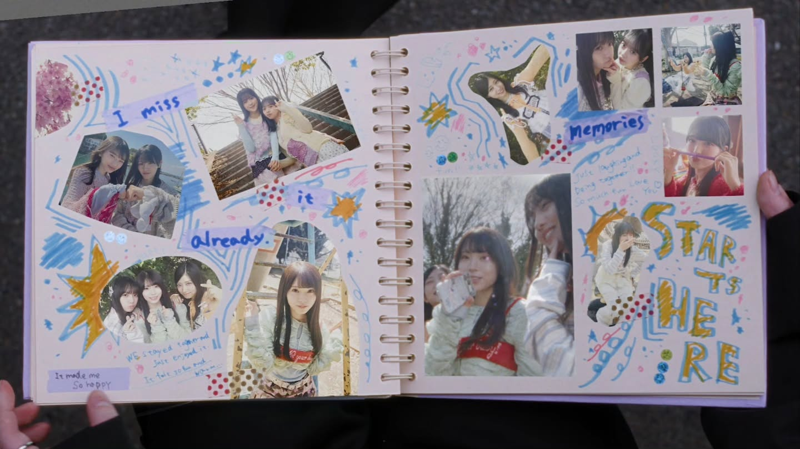
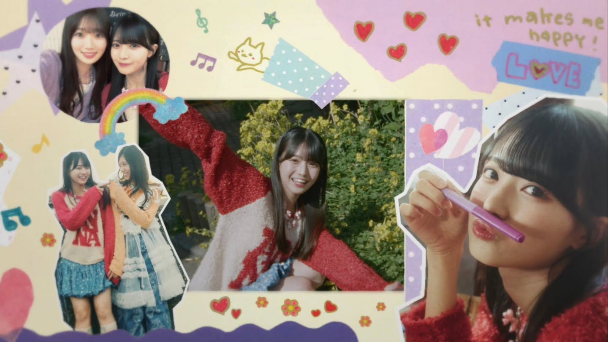
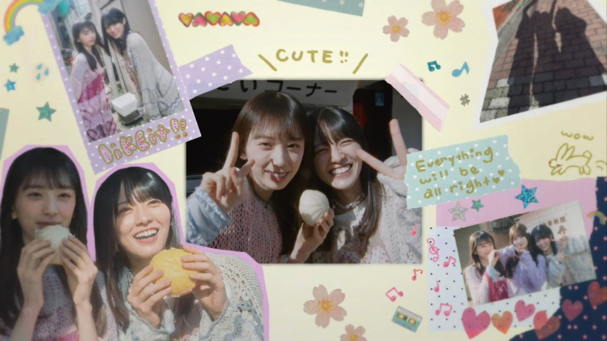
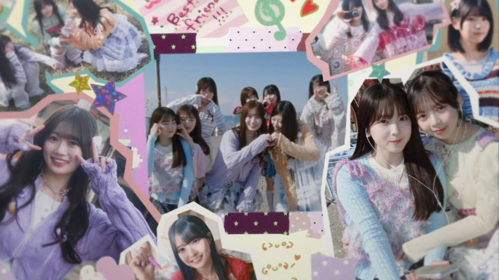
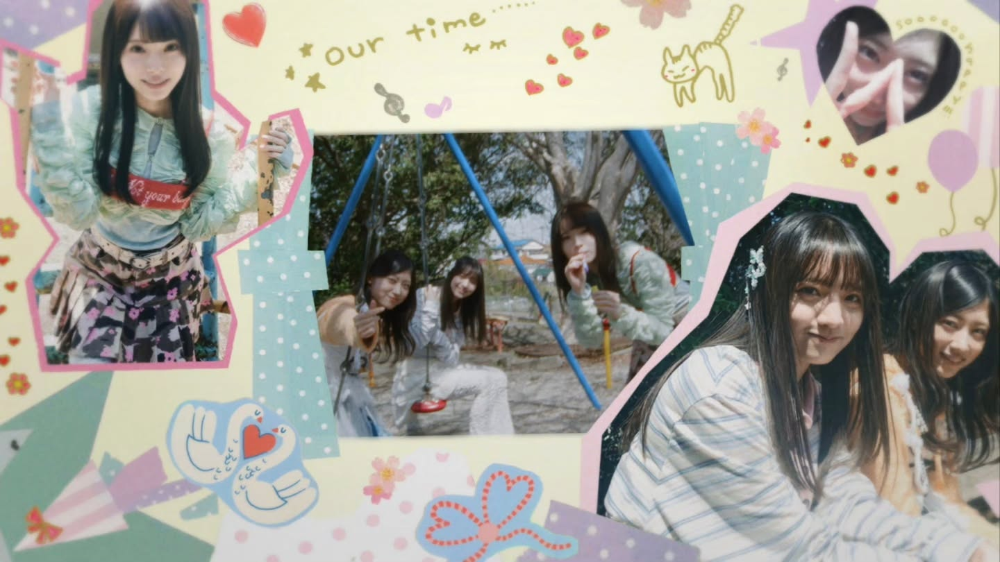
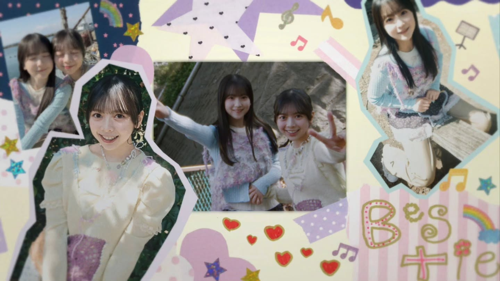
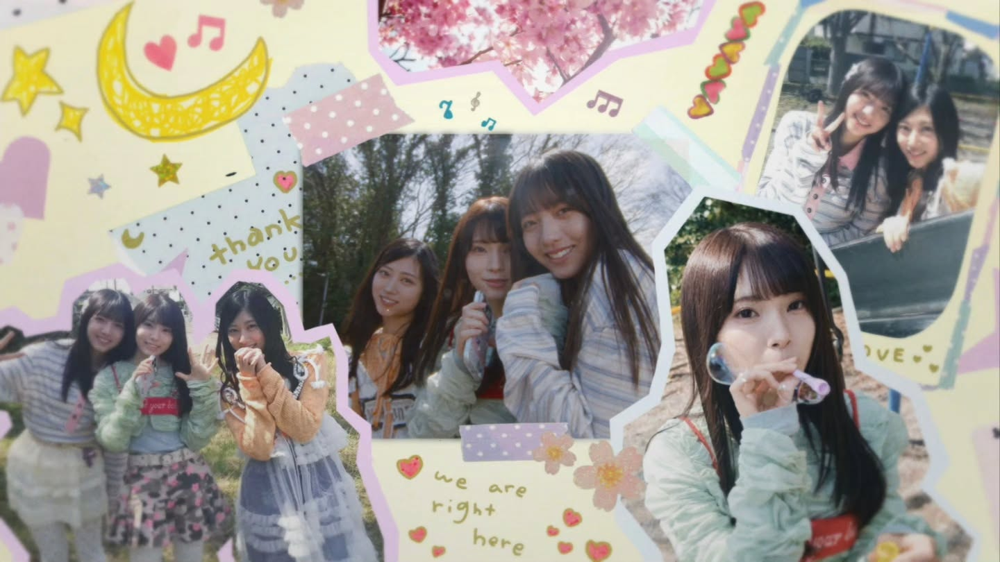
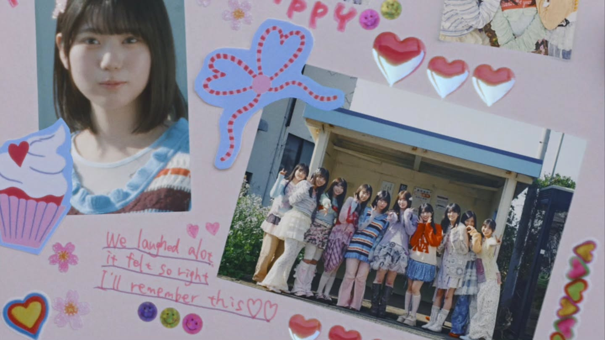
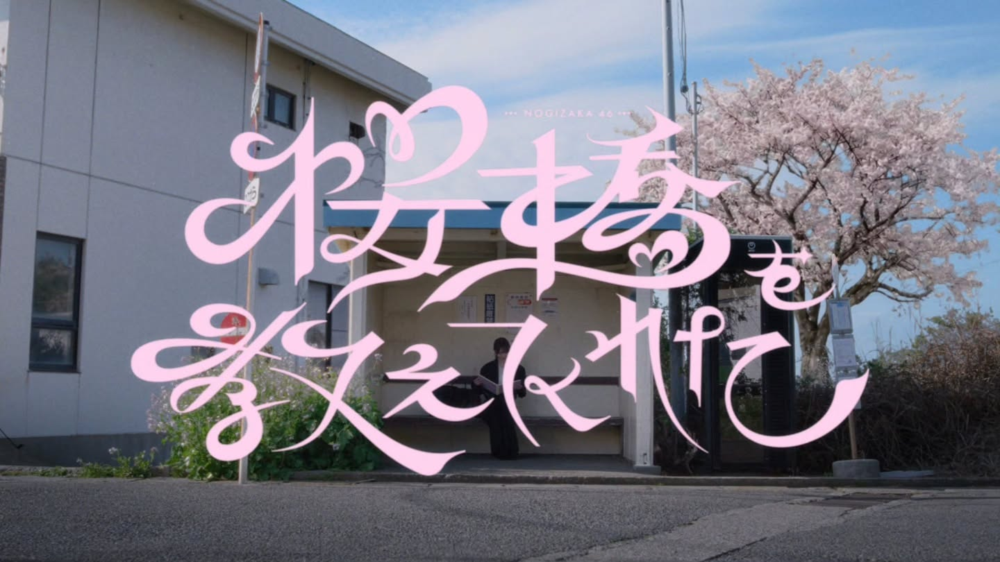
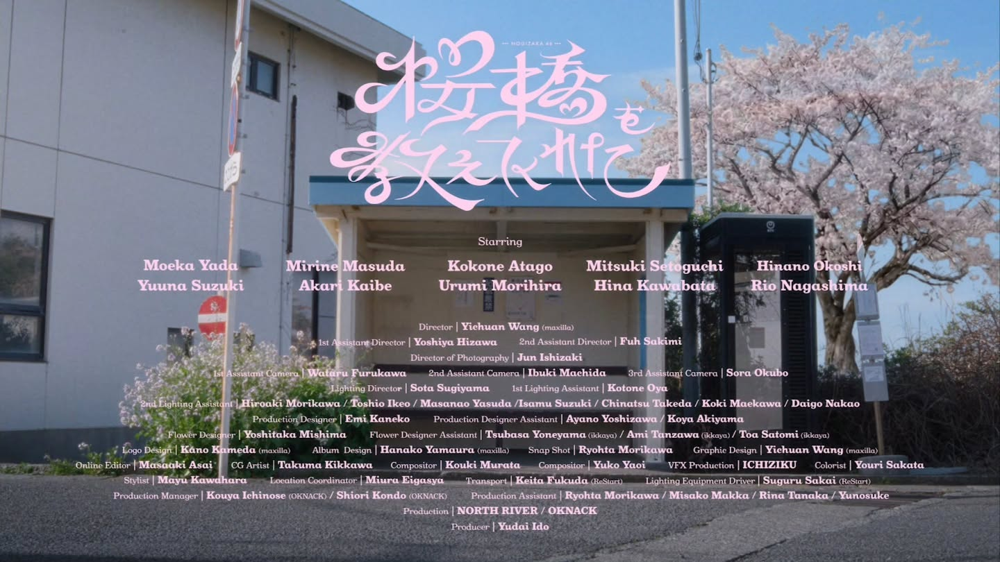
.
【Still/PA work】
乃木坂46「桜橋を教えてくれた」
Music Video
愛宕さんが開いているアルバム写真の
メンバー同士の撮影ディレクションと一部撮影
並びに制作進行として携わらせていただきました
ーーー
All Credit
Member :
Kokone Atago
Hinano Okoshi
Akari Kaibe
Hina Kawabata
Yuuna Suzuki
Mitsuki Setoguti
Rio Nagashima
Mirine Masuda
Urumi Morihira
Moeka Yada
Director : Yichuan Wang (maxilla)
1st Assistant Director：Yoshiya Hizawa
2nd Assistant Director：Fuh Sakimi
Director of Photography : Jun Ishizaki
1st Assistant Camera： Wataru Furukawa
2nd Assistant Camera：Ibuki Machida
3rd Assistant Camera：Sora Okubo
Lighting Director : Sota Sugiyama
1st Lighting Assistant : Kotone Oya
2nd Lighting Assistant : Hiroaki Morikawa / Toshio Ikeo / Masanao Yasuda/Isamu Suzuki / Chinatsu Takeda / Koki Maekawa / Daigo Nakao
Production Designer : Emi Kaneko
Production Designer Assistant : Ayano Yoshizawa / Koya Akiyama
Flower Designer: Yoshitaka Mishima (ikkaya)
Flower DesignerAssistant : Tsubasa Yoneyama (ikkaya) / Ami Tanzawa (ikkaya) / Toa Satomi (ikkaya)
Logo Design : Kano Kameda (maxilla)
Album Design : Hanako Yamaura (maxilla)
SnapShot : Ryohta Morikawa
Graphic Design : Yichuan Wang (maxilla)
Online Editor : Masaaki Asai
CG Artist : Takuma Kikkawa
Compositor : Kouki Murata
Compositor : Yuko Yaoi
VFX Production : ICHIZIKU
Colorist : Youri Sakata
Stylist : Mayu Kawahara
Location Coordinator : Miura Eigasya
Transport : Keita Fukuda (ReStart)
Lighting Equipment Driver : Suguru Sakai (ReStart)
Production Manager : Kouya Ichinose (OKNACK) / Shiori Kondo (OKNACK)
Production assistant : Misako Makka / Rina Tanaka / Yunosuke
Production : NORTH RIVER / OKNACK
Producer : Yudai Ido
©乃木坂46LLC